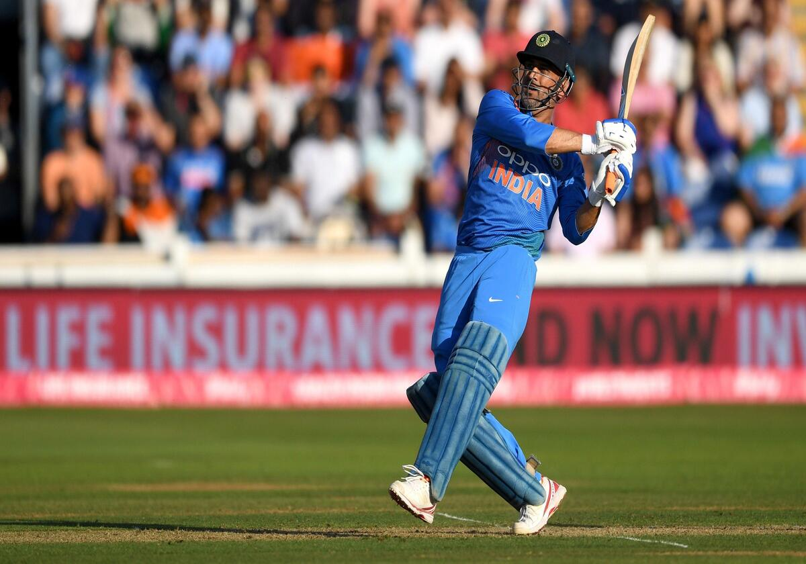
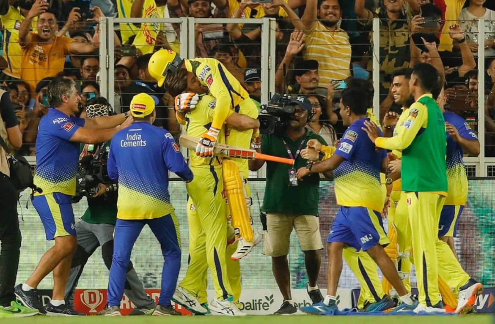

Mahendra SinghMS Dhoni

The 2011 ICC Cricket World Cup was the tenth Cricket World Cup. It was played in India, Sri Lanka, and for the first time in Bangladesh. India won the tournament, defeating Sri Lanka by 6 wickets in the final at Wankhede Stadium in Mumbai.

In a moment that tugged at the heartstrings of cricket fans worldwide, former India captain Mahendra Singh Dhoni played his last international game for India on July 10, 2019, during the World Cup semi-final against New Zealand.

MS Dhoni was an emotional man as Chennai Super Kings (CSK) clinched a record 5th IPL title on May 29, 2023 by beating defending champions Gujarat Titans (GT) in the final of the Indian Premier League (IPL) 2023 at the Narendra Modi Stadium in Ahmedabad.